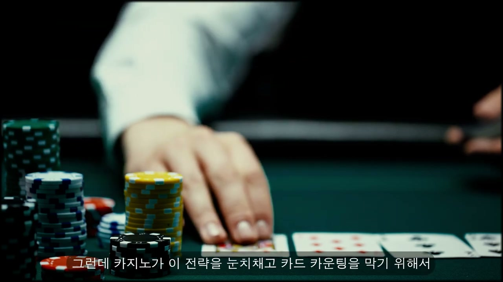
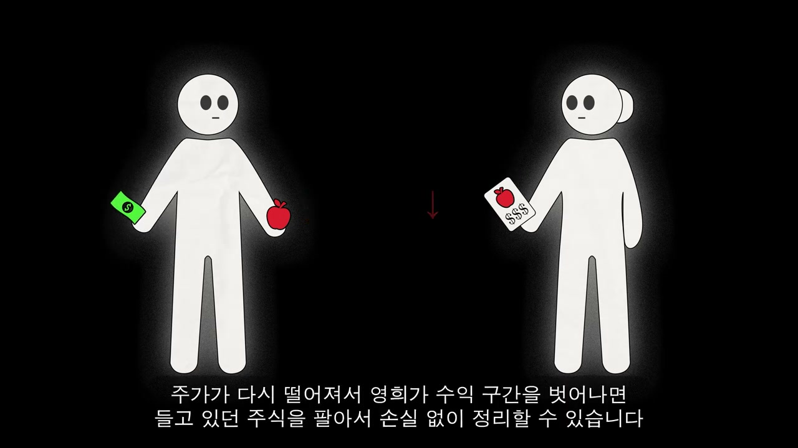
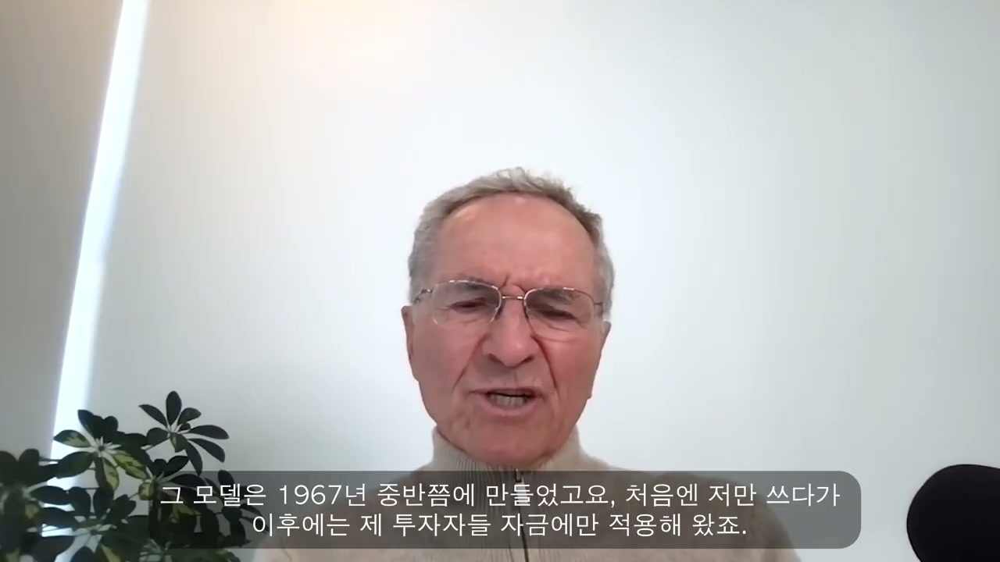
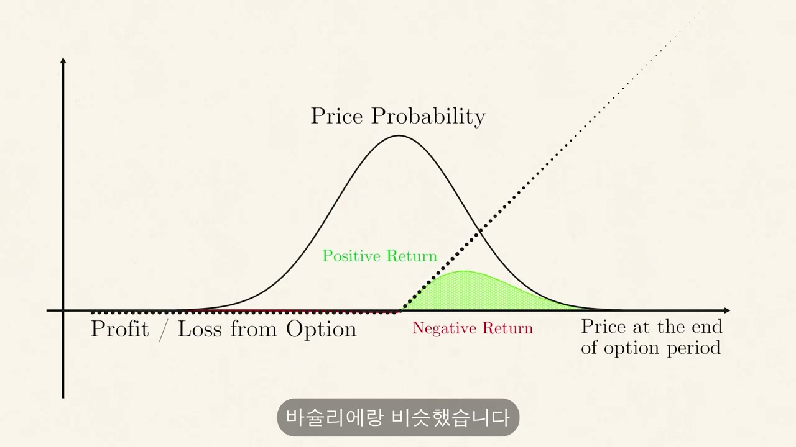
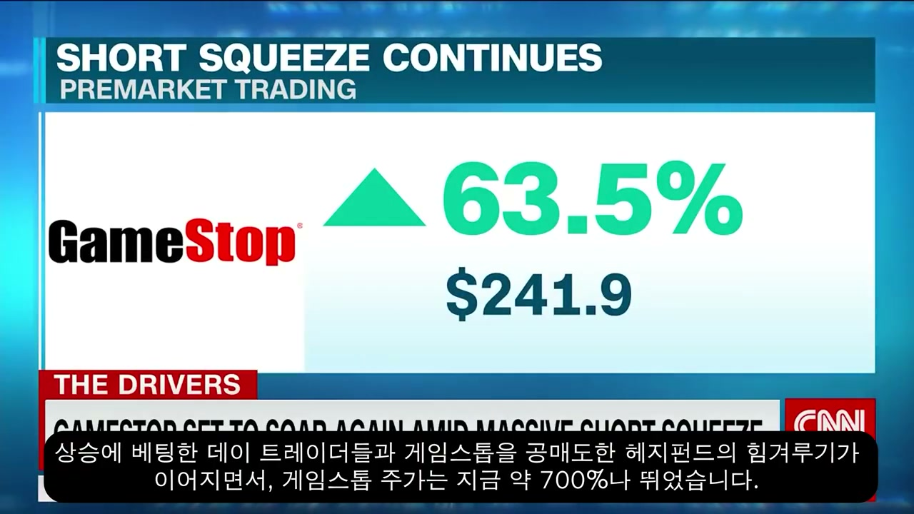
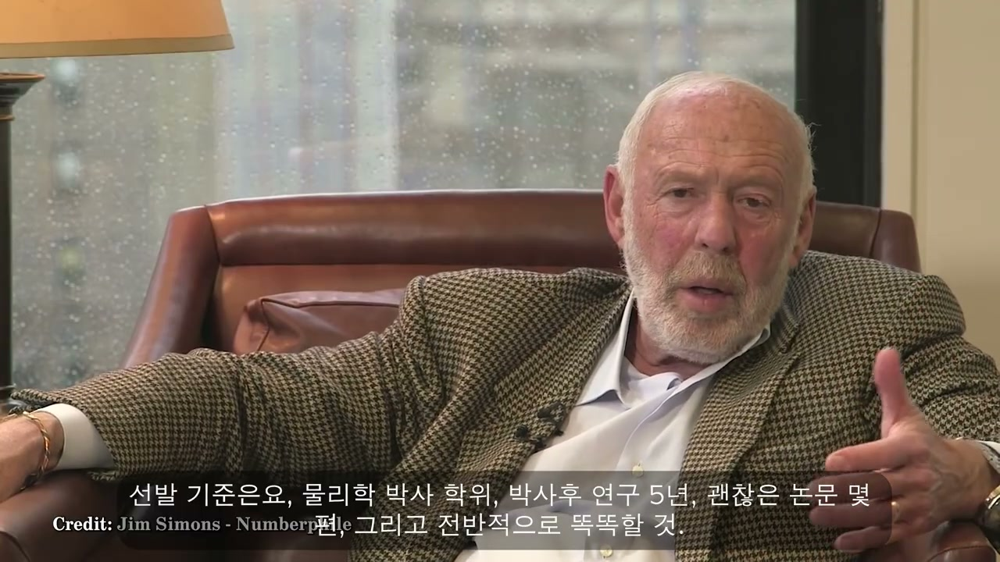
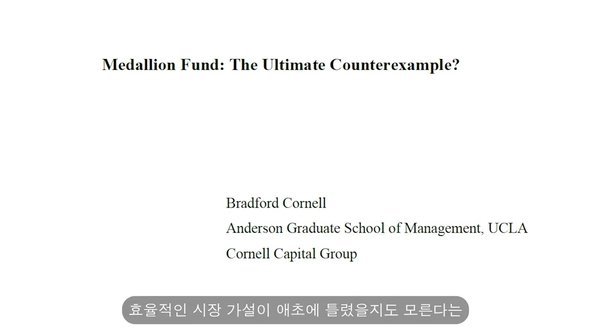
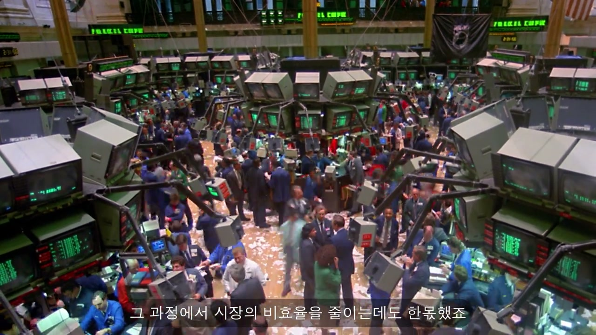
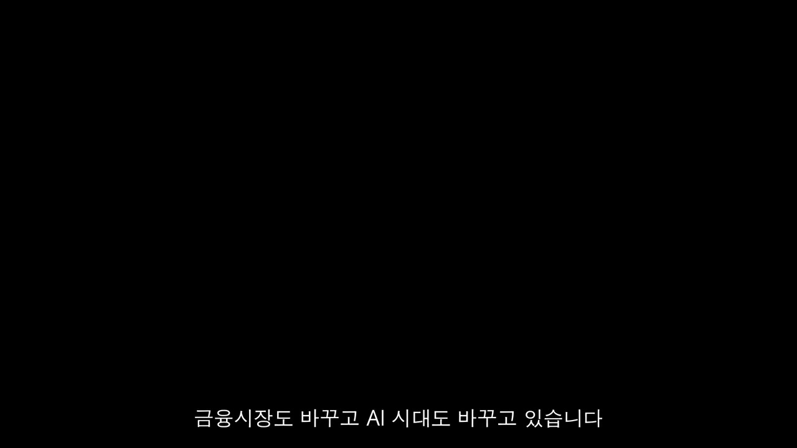

이 글은 전체 2편 중 2편입니다. 긴 영상을 주제 흐름에 맞춰 나누어 정리했습니다.
채널: Veritasium 한국어 - 베리타시움 | 길이: 30:58 | 날짜: 2026-06-22
안내: 이 글은 전체 2편 중 2편입니다.

소프는 라스베이거스에서 블랙잭을 하며 “이미 나온 카드가 남은 카드의 확률을 바꾼다”는 사실을 돈벌이 전략으로 바꾸었다. 당시에는 딜러가 카드 한 벌만 썼기 때문에, 카드를 기억하는 사람이 남은 카드 구성을 계산할 수 있었다. 유리한 카드가 많이 남아 있으면 판돈을 키우고, 불리하면 낮추는 방식은 확률이 실시간으로 변하는 게임을 투자 문제처럼 다룬 것이다. 카지노가 나중에 여러 벌의 카드를 섞어 쓰기 시작했다는 사실은, 시장이 발견된 비효율을 방치하지 않고 제도적으로 흡수한다는 후반부 주제와 연결된다.
블랙잭은 거의 수백 년 동안 이어져 온 게임이었지만, 소프는 그 안에서 수학적으로 이용 가능한 구조를 찾아냈다. 한동안 그는 카드 카운팅으로 상당한 돈을 벌었다고 소개된다. 그러나 카지노가 방어 조치를 취하자 그는 같은 사고방식을 주식시장으로 옮겼다. 자막은 그가 도박 수익을 주식으로 옮기고, 주식시장을 “지구에서 가장 큰 카지노”라고 불렀다고 설명한다.
소프가 금융시장에 가져온 핵심은 단순한 예측보다 헤지였다. 헤지는 손실 가능성이 있는 거래를 반대 방향의 거래로 균형 잡아 위험을 줄이는 방식이다. 블랙잭에서 유리할 때만 판돈을 키운 것처럼, 금융에서도 이길 확률과 질 확률을 계산하고 손실을 상쇄하는 구조를 만든다. 자막은 소프가 블랙잭 테이블의 기술을 주식시장으로 옮겨 당시 보기 드문 성과를 냈다고 말한다.

철수가 영희에게 콜옵션을 팔았다고 가정하면, 주가가 올라 옵션이 수익 구간에 들어갈수록 철수는 손실 위험을 떠안는다. 주가가 1달러 더 오를 때마다 옵션에서 1달러를 잃는 구조라면, 철수는 주식 한 주를 들고 있어 상승분으로 손실을 상쇄할 수 있다. 반대로 주가가 내려 영희의 옵션이 수익 구간을 벗어나면, 철수는 보유 주식을 팔아 위험 없이 정리할 수 있다. 이런 방식이 동적 헤지이며, 주가가 크게 흔들려도 위험은 낮추고 수익 구조는 관리하는 방법이다.
델타는 옵션 가격이 현재 주가 변화에 얼마나 민감하게 움직이는지를 보여준다. 자막은 델타를 “들고 있어야 하는 주식 수”로 풀어 설명한다. 주가가 움직이면 델타도 바뀌므로, 헤지 포지션 역시 계속 조정되어야 한다. 이 때문에 옵션 가격 이론은 정적인 계산이 아니라 시간과 가격 변화에 따라 포트폴리오를 다시 맞추는 과정이다.

기존 바슐리에 모델은 주식 가격이 완전히 무작위로 움직인다고 보았지만, 실제 주식은 기업의 실적이나 성장에 따라 상승하거나 하락할 수 있다. 소프는 이 드리프트를 반영한 더 정확한 옵션 가격 모델을 1967년 중반에 만들었다고 말한다. 그는 처음에는 그 모델을 자기 자신만을 위해 쓰다가, 이후 투자자 자금에도 적용했다. 목적은 명확했다. 그 모델로 모두가 돈을 많이 벌게 하는 것이었다.

소프는 1973년까지 자신의 방식으로 수익을 냈고, 그해 피셔 블랙과 마이런 숄즈가 업계를 바꿀 옵션 가격 방정식을 발표했다. 로버트 머튼도 독자적으로 확률 미적분 기반의 접근을 내놓았다. 소프는 자신만의 영역으로 남을 줄 알았지만, 블랙·숄즈·머튼의 공식이 등장하면서 옵션 가격 계산은 공개된 학문적 도구가 되었다. 같은 해 시카고옵션거래소가 설립되며, 이론과 거래 인프라가 맞물렸다.
블랙-숄즈-머튼 접근은 옵션과 주식을 델타 헤지로 조합해 위험 없는 포트폴리오를 만들 수 있다면, 그 포트폴리오의 수익률은 미국 국채처럼 가장 안전한 자산의 수익률과 같아야 한다고 본다. 위험을 감수하지 않고도 그보다 높은 수익을 얻는 것은 효율적이고 공정한 시장에서는 불가능하다는 전제가 깔려 있다. 그래서 옵션 가격은 단순한 베팅 가격이 아니라, 위험을 제거했을 때 남는 무위험 수익률과 일치하도록 계산된다. 이 논리는 금융상품 가격을 “감”이 아니라 수식의 문제로 바꾸었다.
블랙, 숄즈, 머튼은 바슐리에식 무작위 흔들림에 전반적 흐름, 즉 드리프트를 더한 주가 모델을 발전시켰다. 이 두 요소가 결합되며 금융계에서 가장 유명한 방정식 중 하나가 탄생했다. 해당 편미분방정식을 풀면 옵션 가격을 여러 입력 변수의 함수로 명시적으로 계산할 수 있다. 학문적 아이디어가 곧바로 업계 표준과 거래 시장을 만든 대표 사례다.
이 공식은 옵션뿐 아니라 신용부도스와프, 장외파생상품, 증권화 부채 시장 같은 거대한 산업의 토대가 되었다. 영상은 이런 시장들이 모두 수조 달러 규모로 성장했고, 어떤 형태로든 블랙-숄즈-머튼식 옵션 가격 아이디어를 활용한다고 설명한다. 파생상품은 특정 위험을 분리하고 가격을 붙이고 거래할 수 있게 해준다. 그래서 헤지는 헤지펀드만의 기술이 아니라 기업 재무와 글로벌 금융 전반의 도구가 되었다.
항공사를 운영한다고 하면 유가 상승은 곧 연료비 상승이고, 이는 이익 감소로 이어진다. 이때 유가에 연동된 옵션을 이용하면, 유가가 오를 때 옵션에서 수익을 얻어 추가 연료비를 메울 수 있다. 행사 가격을 미리 정해두면 미래의 불리한 가격 변동에 대한 보호 장치를 확보하는 셈이다. 블랙-숄즈-머튼 모형은 이런 위험을 정확하고 효율적으로 분해하고 관리하는 데 사용된다.

게임스톱 사태는 옵션이 어떻게 시장 움직임을 증폭시키는지 보여준다. 레딧 WallStreetBets 이용자들은 게임스톱을 공매도한 헤지펀드 매니저들이 벌을 받아야 한다고 보고 주식을 매수했다. 하지만 주식만으로는 1달러 현금이 1달러 주식 노출만 만든다. 옵션은 1달러로 경우에 따라 20달러어치 주식에 영향을 줄 수 있어, 주식 매수와 옵션 매수가 결합되면 가격 상승 압력이 훨씬 커진다.
파생상품 시장은 전 세계적으로 수백조 달러 규모로 추정되며, 기초자산의 몇 배에 달한다. 이는 하나의 기초자산을 옵션과 파생상품을 통해 5개, 10개, 20개, 50개의 서로 다른 위험-보상 버전으로 바꿀 수 있기 때문이다. 투자자는 같은 기초자산이라도 자신의 선호에 맞는 노출만 선택한다. 이 구조가 금융시장을 풍부하게 만들지만, 동시에 레버리지를 내장해 급격한 손실을 만들 수 있다.
정상적인 시기에는 파생상품 시장이 유동성을 공급하고 안정성을 높인다. 그러나 시장 스트레스가 발생하면 관련 증권들이 한 방향, 대개 하락 방향으로 동시에 움직일 수 있다. 그렇게 같이 내려가면 큰 시장 폭락으로 이어지고, 파생상품은 시장 교란을 완화하기보다 증폭할 수 있다. 따라서 파생상품은 안정·불안정·무효과를 모두 가질 수 있다는 답이 나온다.
1997년 머튼과 숄즈는 노벨경제학상을 받았고, 블랙은 사망 때문에 수상자는 아니었지만 공헌을 인정받았다. 옵션 가격 공식이 퍼지자 기존의 빈틈은 점점 줄었다. 헤지펀드들은 더 이상 단순한 옵션 가격 오류만으로 큰돈을 벌기 어려워졌고, 새로운 전략이 필요해졌다. 이 지점에서 영상은 짐 사이먼스로 주제를 전환한다.
짐 사이먼스는 원래 수학자였다. 그의 리만 기하학 연구는 수학과 물리학 전반, 매듭 이론, 양자장 이론, 양자 컴퓨팅에까지 영향을 끼쳤다고 설명된다. 그는 1976년 미국수학회로부터 오스월드 베블런 기하학상을 받으며 학자로서 이미 정점에 있었다. 그러나 1978년 르네상스 테크놀로지를 세우고, 머신러닝으로 주식시장의 패턴을 찾아 돈을 벌겠다는 전략을 세웠다.

당시 많은 사람들은 시장이 너무 복잡해 누구도 예측할 수 없다고 말했다. 사이먼스는 냉전 시절 미국 국방 분석 연구소에서 방대한 데이터 속 패턴을 찾아 러시아 암호를 해독한 경험이 있었고, 같은 방법으로 시장도 충분히 예측할 수 있다고 생각했다. 그는 학계 인맥을 총동원해 물리학 박사, 박사후 연구원, 논문을 낸 수학자·천문학자·통계학자 등 똑똑한 과학자들을 모았다. 금융은 수학 조교수보다 훨씬 돈을 많이 주었고, 수학자들에게는 가격결정 문제 자체의 아름다움도 있었다.

초창기 머신러닝 모델을 만든 레너드 바움도 그 인재군에 포함되었다. 영상은 아인슈타인이 꽃가루의 움직임을 수학적으로 설명했듯, 은닉 마르코프 모델이 보이지 않는 숨은 상태를 관측 데이터로부터 추정해 미래를 예측하는 방법이었다고 설명한다. 이 접근은 금융계의 전설인 메달리온 펀드를 만드는 데 쓰였다. UCLA의 브래드퍼드 코넬 교수는 메달리온 펀드가 효율적 시장 가설의 궁극적 반례일 수 있다는 논의를 제기한다.

코넬은 1988년에 미국 주식시장을 대상으로 효율적 시장 가설을 검증한 논문을 발표했고, 데이터상 그 가설을 기각할 수 있다고 밝혔다. 이는 주식시장에 예측 가능성이 존재한다는 뜻이다. 질문자가 “그렇다면 시장을 이길 수 있다는 말인가”라고 묻자, 답은 훈련과 능력이 있다면 가능하다는 쪽으로 제시된다. 이 대목은 사이먼스식 퀀트 전략이 단순한 운이 아니라 데이터, 모델, 훈련의 문제였음을 강조한다.

물리학자와 수학자들은 주식시장의 무작위성 속에서 패턴을 찾았고, 그 영향은 개인의 돈벌이를 넘어 시장 움직임 자체를 모델링하고 위험을 바라보는 방식을 바꾸었다. 파생상품의 적정 가격을 밝히고, 새로운 시장을 만들고, 시장의 비효율을 줄이는 데도 기여했다. 그러나 아이러니하게도 시장의 패턴을 모두 밝혀내는 순간 그 규칙은 곧바로 힘을 잃고 사라진다. 결국 가격은 다시 무작위처럼 움직이고, 시장은 다시 효율적인 상태로 돌아간다.
“유리할 때는 판돈을 키우고, 불리할 때는 돈을 낮추는 방향으로 돈을 벌었습니다.”
“주식시장을 지구에서 가장 큰 카지노라고 불렀죠.”
“델타는 들고 있어야 하는 주식 수를 의미합니다.”
“그 모델은 1967년 중반쯤 만들었고, 처음엔 저만 쓰다가 이후 투자자 자금에 적용했습니다.”
“옵션은 기초자산을 5개, 10개, 20개, 50개의 버전으로 바꿀 수 있습니다.”
“정상 시기에는 유동성과 안정성의 원천이지만, 비정상 시기에는 시장 붕괴를 키울 수 있습니다.”
“패턴이 보이면 그게 돈인 거죠.”
“시장의 패턴을 밝혀내는 순간 그 규칙들은 힘을 잃고 사라집니다.”
이 파트의 핵심은 수학이 카지노의 작은 확률 우위에서 출발해 옵션 가격, 파생상품, 기업의 위험관리, 게임스톱 같은 시장 사건, 그리고 머신러닝 기반 퀀트 펀드까지 확장되는 과정이다. 소프는 카드 카운팅으로 “확률이 돈이 되는 순간”을 보여주었고, 블랙-숄즈-머튼은 위험을 가격으로 바꾸는 공식을 제시했다. 사이먼스는 시장이 완전히 무작위라는 통념에 맞서 데이터 속 패턴을 찾아냈고, 그 과정에서 수학자와 물리학자는 금융시장의 구조 자체를 바꾸었다. 마지막 메시지는 역설적이다. 시장의 비효율을 찾아내면 돈을 벌 수 있지만, 그 비효율이 널리 발견되고 거래되면 곧 사라지며 시장은 다시 더 효율적이고 더 무작위적인 모습으로 돌아간다. 결국 이 영상은 “수학자들이 돈을 벌고 싶어 했다”는 농담을 넘어, 현대 금융과 AI 시대를 움직이는 핵심 언어가 확률, 미분방정식, 데이터 모델링이라는 점을 보여준다.
댓글
GitHub 이슈 기반 댓글 시스템입니다.